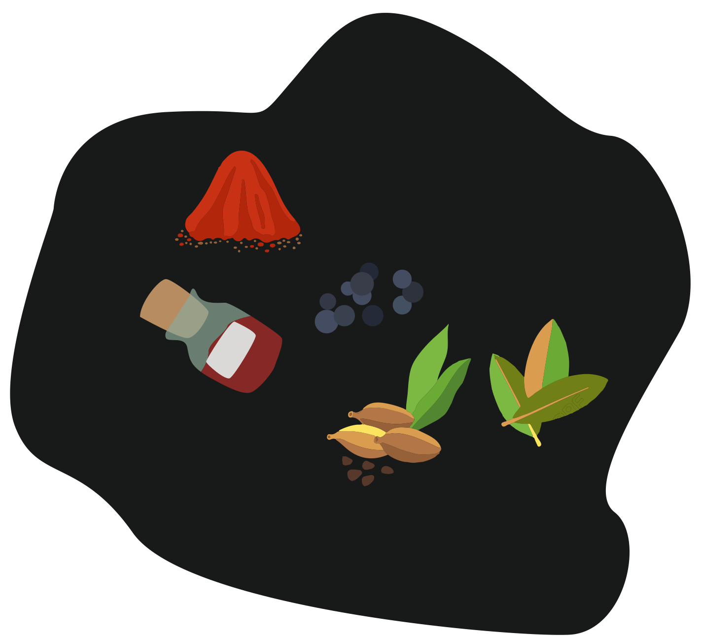
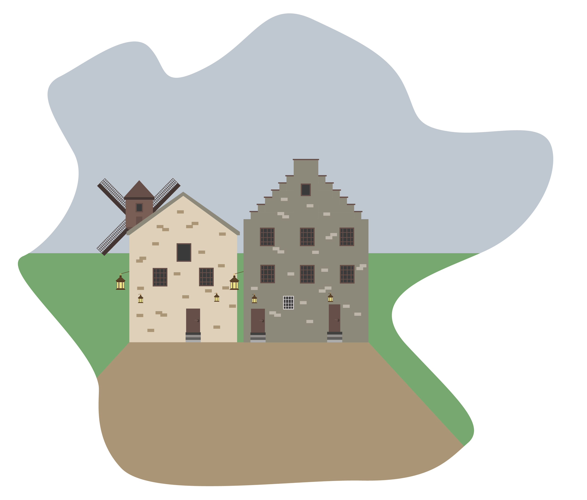
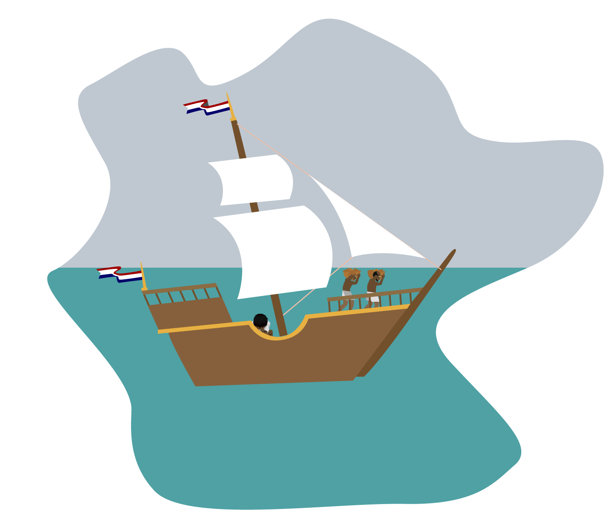
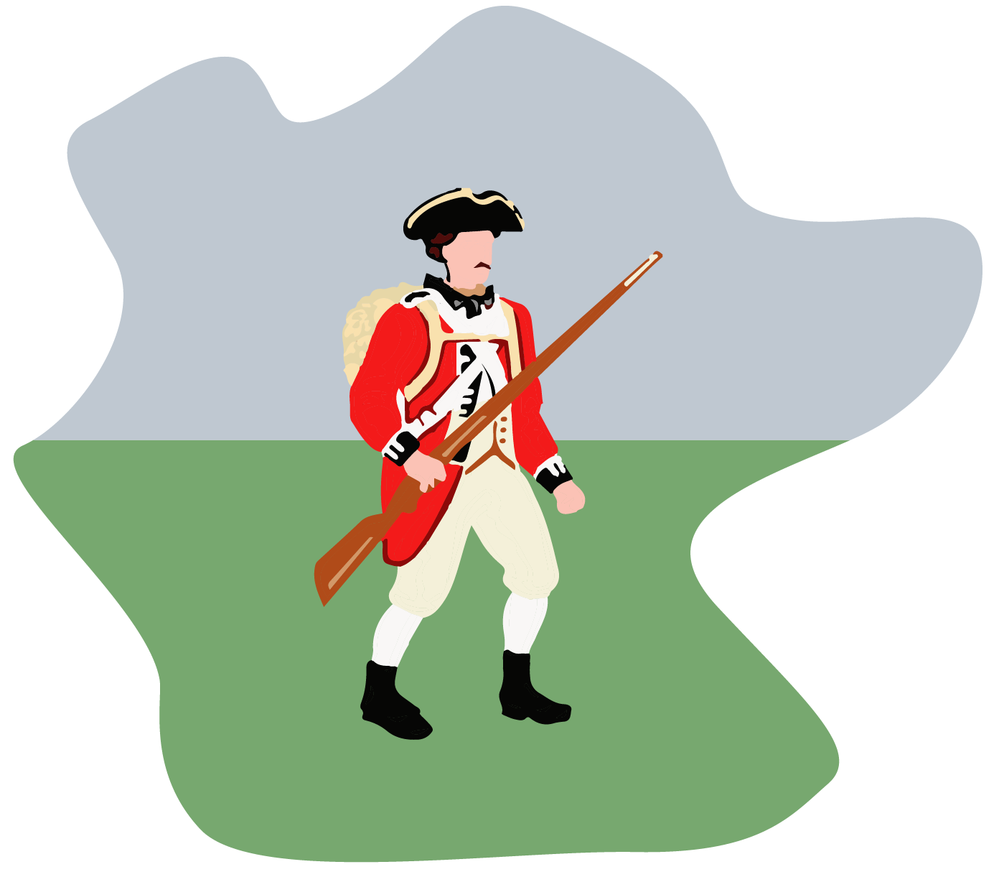

Door een tussenstop, hoopt hij, op de route naar de lucratieve specerijenmarkten van Azië.
Die hulp kwam van tot slaaf gemaakte Afrikanen die zij aan zij met de kolonisten de grond bewerkten, zaaiden en oogstten, en huishoudelijk werk deden.
Andere tot slaaf gemaakten komen direct van de Afrikaanse westkust.
In de meer landelijke delen van Nieuw Amsterdam hebben rijke Nederlandse gezinnen meer slaven, die op hun landgoed dertien tot slaaf gemaakten te werk stelde.
Ze komen met het slavenschip Gideon, dat in 1664 uit Amsterdam vertrekt met aan boord, naast allerlei handelswaar, een lading ijzeren pols- en enkelboeien.
Kort erop zeilt een Engelse vloot de haven binnen, op bevel van de hertog van York, om Nieuw Amsterdam in te nemen. De Nederlanders zijn niet opgewassen tegen de overmacht. De Engelsen nemen het eiland in zonder dat ze een schot hoeven te lossen.
Onder Engels bewind mogen de Nederlandse kolonisten op het eiland blijven, mits ze trouw zweren aan de Engelse kroon.
In de voorwaarden bij een veiling op 29 mei 1664 lezen we dat het de koper vrij staat zijn tot slaaf gemaakte als ‘Bond Slave’ te gebruiken of door te verkopen. Het document leert ons dat een mens destijds 100 gulden oplevert, afgemeten naar de waarde van bevervellen.